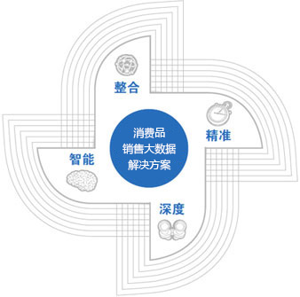

方案概述
数位港湾消费品销售大数据解决方案，以营销为中心，以"整合、精准、深度、智能"为核心价值，集营销渠道管理、销售业务管理、市场推广管理、客户关系管理、营销分析多种解决方案于一体，为企业内部和外部所有客户提供服务，彻底打通企业营销体系内各部门、各区域、各层级之间和企业上下游客户之间的信息通道，覆盖快消品企业营销过程所有阶段业务，包括订单管理、渠道管理、零售管理、仓储配送、移动营销、团队管理、知识管理、市场情报、营销活动、营销费用、客户分析、营销活动分析、营销费用分析等多模块。它不仅能够帮助企业全面提高营销管理工作效率，而且能够真正实现营销管理工作的客观化和信息化，为企业营销决策提供科学化依据。
营销管理分析
随着中国经济的快速发展，巨大的国内市场不仅培养了为数众多的中国本土品牌，世界的各行业巨头也纷纷进入国内市场，国内的营销环境异常复杂，企业面临的营销管理也是富有挑战性的，企业营销竞争模式由以产品为先导的竞争模式向以渠道为先导的竞争模式转变，从而营销模式的选择成为企业经营的决胜之道。如何有效整合营销资源、提高经营效率、提升核心竞争能力是企业面临的营销管理的主要问题。
总体思路
数位港湾消费品销售大数据解决方案以营销为中心，围绕企业营销体系，构建一体化的解决方案。
在营销支持方面，数位港湾消费品销售大数据解决方案能够为企业提供财务物流商务一体化和产销一体化、多渠道整合的平台，实施客户全生命周期与高效物流执行管理平台。
在市场推广方面，数位港湾消费品销售大数据解决方案能够为企业搭建市场竞争情报系统，为市场推广奠定基础，精细化营销活动与费用管理。
在销售执行方面，数位港湾消费品销售大数据解决方案拥有基于团队计划、活动、培训等协同工作平台，拥有基于路线规划、拜访计划、移动销售的销售执行平台。
方案价值

整合：企业能够整合内部和外部客户，实现营销业务统一开展、游资源统一调配；
精准：企业能够通过营销工作一体化运作、精准定位客户、为客户创造价值；
深度：企业能够以营销为核心带动各领域一体化协同发展；
智能：企业能够通过移动营销实时掌握营销动态，进行多角度营销分析，精准抓住客户需求，提供个性化服务。
我们的优势
- ■有效提高服务质量和及时性
- ■有效控制服务执行、管理成本
- ■有效缩短服务周期，提升满意度
- ■有效提高决策的及时性和可靠性
联系我们
400-603-1199